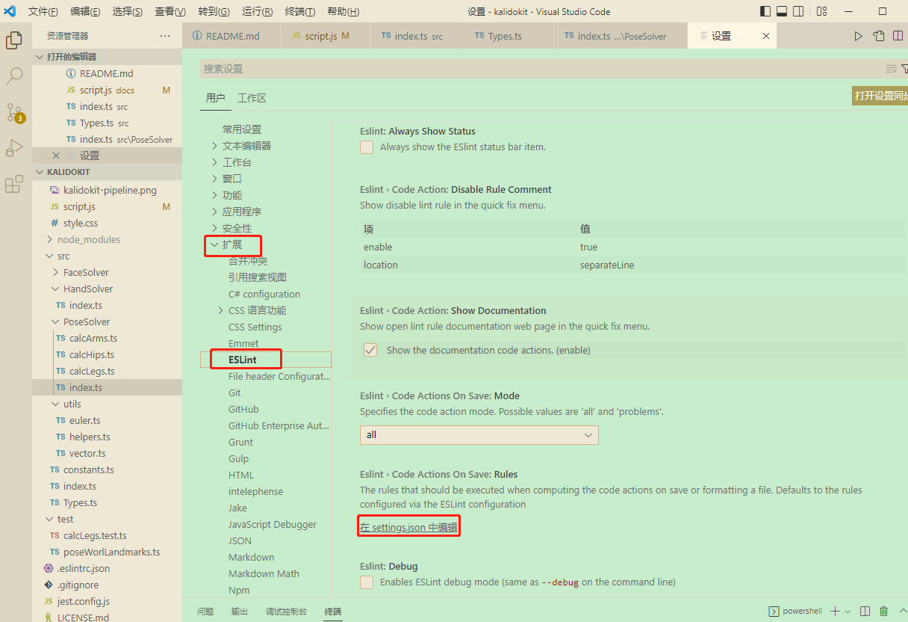

VSCODE配置
一、颜色及代码配置
1 vscode主题选择为 Solarized Light
2 自定义颜色部分(setting.json)
"workbench.colorTheme": "Solarized Light",
"workbench.colorCustomizations": {
"editor.selectionBackground": "#e41fda7e", //选中高亮
"editor.background": "#C7EDCC", //背景颜色
},
"editor.tokenColorCustomizations":{
"comments": "#9ea023da", //注释
"keywords": "#0a0", // 关键字
"variables": "#f00", // 变量名
"strings": "#18170fbd", // 字符串
"functions": "#5b99fcc9", // 函数名
"numbers": "#AE81FF" // 数字
},
3 自定义字体大小与取消逗号补全关键字
"ecitor.fontsize":16,
"editor.acceptSuggestionOnCommitCharacter": false,
二、html快捷键配置
1.快速生成标签
打开配置文件添加如下配置
"emmet.triggerExpansionOnTab": true,
"emmet.showAbbreviationSuggestions": true,
"emmet.showExpandedAbbreviation": "always",
"emmet.includeLanguages": {
"javascript": "html"
}
三、JS快捷键配置
1.快速头注释
- 安装 koroFileHeader
- 配置 setting.json
- 在VS Code中，依次打开 “文件(File) → 首选项(Preferences) → 设置(Settings)”,然后搜索fileheader以打开setting.json文件
最后在setting.json中添加如下配置命令：（配置命令可自定义修改哈，详细配置见GitHub：koroFileHeader）
// 头部注释 "fileheader.customMade": { //快捷键 ctrl+win+i "Author": "Xminyang", // 创建文件的作者 "Date": "Do not edit", // 文件创建时间(不变) "LastEditors": "Xminyang", // 文件最后编辑者 // 由于编辑文件就会变更最后编辑时间，多人协作中合并的时候会导致merge // 可以将时间颗粒度改为周、或者月，这样冲突就减少很多。搜索变更时间格式: dateFormat "LastEditTime": "Do not edit", // 文件最后编辑时间 // 输出相对路径，类似: /文件夹名称/src/index.js "FilePath": "Do not edit", // 文件在项目中的相对路径 自动更新 // 插件会自动将光标移动到Description选项中 方便输入 Description字段可以在specialOptions更改 "Description": "", // 介绍文件的作用、文件的入参、出参。 // custom_string_obkoro1~custom_string_obkoro100都可以输出自定义信息 // 可以设置多条自定义信息 设置个性签名、留下QQ、微信联系方式、输入空行等 "custom_string_obkoro1": "", // 版权声明 保留文件所有权利 自动替换年份 "custom_string_obkoro1_copyright": "Copyright (c) ${now_year} by 用户/公司名, All Rights Reserved. " }, // 函数注释 "fileheader.cursorMode": {//快捷键 ctrl+win+t "description": "", // 函数注释生成之后，光标移动到这里 "param": "", // param 开启函数参数自动提取 需要将光标放在函数行或者函数上方的空白行 "return": "", }
四、react配置
1.快捷键插件配置
组件名 - VS Code ES7 React/Redux/React-Native/JS snippets
快捷键 - 输入rcc + 回车 = 生成类组件必要代码
五、代码语法规则配置-ESlint
1.插件安装 ESLint
2.插件扩展配置

添加如下配置：
"editor.codeActionsOnSave": {
"source.fixAll.eslint":true
},
3.配置 eslint 进行格式化
由于安装最新的 create-react-app 结合 VScode 编辑器即可支持 eslit，但是需要在项目根目录中要添加 .env 这个配置文件，设置 EXTEND_ESLINT=true 这样才会启用 eslint 检测，注意要 重启 vscode